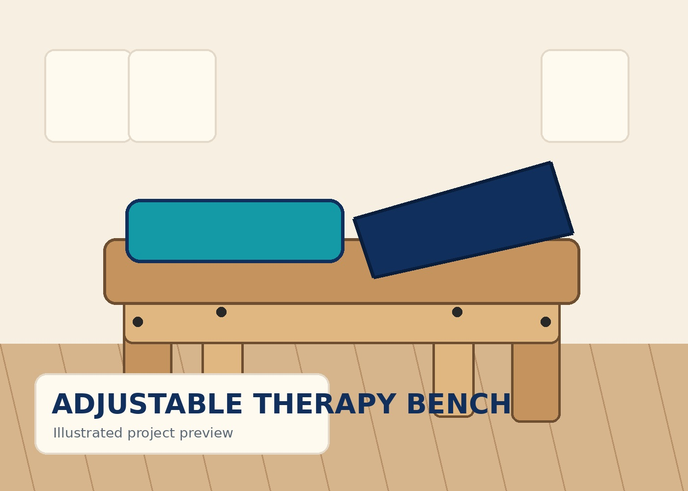

DIY
Approachable
Plans use clear dimensions, common materials, and realistic tools.
Built For Them creates approachable, free build guides that help families and volunteer makers create useful adaptive equipment with common tools and materials.

The goal is not to replace therapists, clinicians, or commercial equipment. It is to give families and makers a practical starting point for building thoughtfully and adapting carefully.
Plans use clear dimensions, common materials, and realistic tools.
Every project begins with the needs of a child and family.
Designs can be adjusted with guidance for individual needs.
Open build guides help useful ideas reach more families.
This is currently the only public, build-ready project on Built For Them.
Designed around 3/4-inch plywood, simple hardware, and tools many home builders already own.
These ideas are being researched and prototyped. They are shown only to communicate what may be coming next.
Exploring modular mounts compatible with common camera-mount hardware and multiple surfaces.
Early-stage ideas will remain unpublished until plans, safety notes, and testing are complete.
Share a need, suggest an improvement, volunteer to prototype, or provide professional feedback on a developing design.